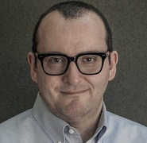

Join Leading Experts in Digital Health and AI
This workshop showcases innovative applications of AI in healthcare, from medical imaging and predictive diagnostics to health information dynamics and ethical considerations. Experts will discuss advancements in nuclear medicine, video analysis, and real-time imaging, emphasizing AI's role in improving outcomes and extending healthy life expectancy.
Register NowEvent Details
Date: 12 February, 2025
Location: Melbourne Connect
Format: Hybrid (In-person & Virtual)
Conference Schedule
| Opening remarks | 1:00pm - 1:05pm |
|
Talk 1 Katsuhiko Ogasawara, PhD "Infodemiology: Propagation of health information in the Fukushima nuclear accident on Twitter" |
1:05pm - 1:30pm |
|
Talk 2 Kenji Hirata, MD PhD "AI-Driven Improvements in Nuclear Medicine: Better Images, Faster Reports, Better Outcomes" |
1:30pm - 1:55pm |
|
Talk 3 Hiroyuki Sugimori, PhD "AI in Medical Video Analysis: An Overview of Applications and Techniques" |
1:55pm - 2:20pm |
| AFTERNOON TEA (30 minutes) | |
|
Talk 4 Ayako Yagahara, PhD "AI in Radiological Technology: Modeling and Evaluation" |
2:50pm - 3:15pm |
|
Talk 5 Hiroyuki Takashima, PhD "Imaging Analysis Focused on Extending Healthy Life Expectancy" |
3:15pm - 3:40pm |
|
Talk 6 Naomi Takeda, MD PhD "Machine Learning for Predictive Diagnostics in Oncology" |
3:40pm - 4:05pm |
| FIVE MINUTE BREAK | |
|
Talk 7 Takeshi Nakamura, PhD "Deep Learning Models for Cardiovascular Imaging" |
4:10pm - 4:35pm |
|
Talk 8 Sachiko Tanabe, MD PhD "Ethical Considerations in AI-Powered Health Applications" |
4:35pm - 5:00pm |
|
Talk 9 Masahiro Kato, PhD "Advances in Neural Networks for Real-Time Image Reconstruction" |
5:00pm - 5:25pm |
| Closing remarks | 5:25pm - 5:30pm |
Program chair

Dr. Mike Conway
Senior Lecturer
University of Melbourne
Dr. Katsuhiko Ogasawara
Professor of Health Sciences
Hokkaido University